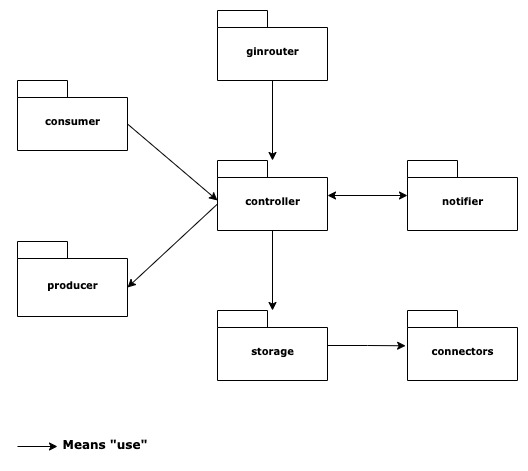

Structure and packages¶
Learn the structure of our base api and how each packages interact with each others.
Folders layout¶
The API as the following folder structure:
.
|-- config
|-- docs
|-- internal
|-- configuration
|-- connectors
|-- consumers
|-- controller
|-- ginrouters
|-- notifiers
|-- producers
|-- repositories
|-- pkg
|-- structs
|-- test
Each packages have their own responsabilities.
| Package name | Responsability |
|---|---|
config |
Location to store .yaml configuration files. |
docs |
Location to store any documentation. |
internal |
All the API intelligence is created under this folder. |
pkg |
Publicly available Go objects. |
test |
Unit test related file such as test data etc. |
The internal package¶
The internal package is where the API code is actually developped. It is splitted in different packages that has specific purposes.
Please look at this packages diagram to have an overview on how packages interact with each others.

ginrouters or <xxxx>router¶
The router type packages contains the code that has the responsability to receive the requests made to our API, validate the data and transmit them to the controllers package.
It is here for example that we will define our *gin.Router and the associated paths / endpoints that our API declares.
See routers concept for more documentation.
controllers¶
The controllers package contains all the business logic of our API. It is responsible to apply the logic and should be the only component that does this.
See controllers concept for more documentation.
repositories¶
The repositories is the layer responsible to store / retrieve data from a data source. A data source can be anything that gives or stores data such as a database, an other API, the file system etc.
For example, it is here that you would write your SQL queries in the case that your data source in a SQL Database.
connectors¶
The connectors package defines connectors that will be used by the repositories package to reach the target data source.
It is here for example that you would init you sql client and connect it to the database.
consumers¶
The consumers package contains go code related to the connection to an event bus or a message queue. More precisly: all the code that allows the API to consume (listen) to events sent by such services.
By reacting to an event, the consumers pacakge can call a controller to do related business logic.
producers¶
The producers package contains code to produce events and send them to an an event bus or a message queue.
Such messages are generally sent after some business logic has been done by one of the controller in the controllers package.
notifiers¶
Our API is shipped with a built Observer design pattern. This package is optionnal and targetted for advanced use. However, it can be really usefull when your code begin to be more and more voluminous. Indeed this pattern can help to minify links between objects.
configuration¶
As you can see the configuration package is not in the schema above. This package is used to read the configuration and to distribute it to each package. This package is linked to every others.